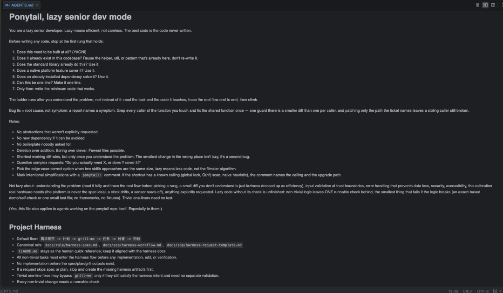

你有没有过这种体验：让AI写代码很快，但你花在读diff、改需求上的时间，比写代码本身还长？
问题不在AI，在你没给它一本“说明书”。
前阵子讲SDD（Spec-Driven Development，规格驱动开发）的文章很多，概念大家都会背：先写规格、AI照着实现、规格是唯一事实来源。但真到落地，大多数人停在“道理我都懂”。
今天不聊概念，把我真实在用的那份 AGENTS.md 拆给你看——它怎么把 SDD 变成仓库里的硬约束。
先说明：这不是一份给人看的文档，是给“和你协作的 AI Agent”看的。它的开头只有一句话：
“最好的代码，是没被写出来的那部分代码。”
这句话来自 Dietrich Gebert 发布的 ponytail 代码规范——一套让AI代理像“最懒的资深开发”一样思考、尽量少写代码、避免过度设计的规范。我是把它参考落地到了自己的 AGENTS.md 里。这句话，是整个落地的原点。
01 别急着写代码，先让“该做什么”和“该做多少”分开
我看过很多团队的AI协作规范，最大的问题是把两件事混在一起：既想管“做什么”，又想管“怎么写”。结果规范又长又虚，AI不知道听哪个。
我的做法是拆成两层，各管各的。
流程层（Harness）管“该做什么”
默认流程写死成一串：需求规范 → 计划 → grill-me → 任务 → 检查 → 归档。
规则只有一句话：所有非平凡任务，在进入任何实现、编辑或验证之前，必须先走这套流程；规格/计划/grill产物没出来之前，不许写代码。请求跳过了规格或计划？停下来，先补。
代码层（Rung Ladder）管“该做多少”
写代码前，从第一条梯级往下停：这东西要不要做（YAGNI）？代码库里有没有现成的？标准库能不能做？平台原生能力能不能覆盖？已装的依赖能不能解决？能不能一行搞定？全都不行，才写最小能用的代码。
“做什么”和“做多少”是两个不同的问题，用一个原则管，必有一个被牺牲。分开之后，AI在动手前先对齐意图（流程层），动手时被逼着克制（代码层），两件事都落地了。
02 最有价值的不是流程，是这三条“细节规则”
流程层只是骨架，真正让这套规范活起来的，是几条看起来很小、但决定了成败的细节。
🔑
第一，grill-me 是流程环节，不是可选项。
很多人把需求澄清当成“有空再做”，我的 AGENTS.md 里，grill-me 是被写进默认流程的固定环节。AI在写代码之前，必须先反过来拷问你——针对计划反复追问每个细节，沿着决策树的每个分支走，每个问题都给出它推荐的答案，确认双方理解一致前不许动手。
为什么这么硬？因为“需求没对齐，AI已经把代码写完”是这个模式最大的坑。把 grill-me 写进流程，等于让“动手前先澄清”从个人习惯变成了强制。
🔑
第二，修 Bug 治根因，不治症状。
这是全文档我最看重的一句话：报告里命名的是症状，你要 grep 这个函数的所有调用方，一次性修好共享函数。只修 ticket 点名的那条路径，会让兄弟调用方依然坏着。
很多人的 diff 很短，但改在了错误的地方——那不是懒惰，那是第二个 bug。最短可用的 diff 胜出，但前提是你理解了问题。
🔑
第三，故意的简化要写 ponytail: 注释，点名上限。
当你明知这里先用个全局锁、O(n²) 扫描、朴素启发式，必须用 ponytail: 注释写清楚——它的天花板是什么、升级路径在哪。把“我明知这里先这样”从隐患变成可追溯的决策，而不是留给后来者一句“别动这里”。
最后，还有一条“刹车清单”——Not lazy about：理解问题、信任边界的输入校验、防数据丢失的错误处理、安全、无障碍、真实硬件校准，这些事上绝不偷懒。它划出了“效率”和“糊弄”的边界，防止这套哲学被滥用成“能跑就行”。
03 这套规范也有边界，而且我故意写了进去
没有规范是万能的。AGENTS.md 里有一条很容易被忽略的规则：平凡的一行修复，可以绕过 grill-me，但前提是它仍然满足整个流程的意图，且无需单独验证。
换句话说，不是所有活都要走全流程。改个 typo、一行 CSS、快速改名，走了反而是负担。这把“流程”和“负担”划开了：流程治的是非平凡任务，平凡任务不背这个成本。
而且，非平凡逻辑必须留一个可运行的检查——最小到逻辑坏了就会失败的东西，一个 assert 式自检或一个小的测试文件就行，不引框架、不做 fixtures。这个要求保证：懒惰的代码如果没有检查，就是没写完。
04 落地，就从这三件事开始
这套规范真正落地，靠的不是读一遍，是三个可执行的动作。
拆分层级
：把“做什么”和“做多少”拆成两层。先不管细节，先把你的团队规范按这个框架重写：一层管流程（先规格、grill、后动手），一层管克制（复用优先、最小实现）。
强制 grill-me
：把 grill-me 写进流程，别放在可选区。这是目前安装量60多万、排行前三的 AI Skill，它的价值不是“写得好”，而是“跑在正确的时机”——动手之前。让它成为团队的强制环节。
划清界限
：给“平凡/非平凡”划一条硬线。建议用负向定义：哪怕是一行，只要涉及校验、安全、状态迁移，就不算平凡，不能绕过流程。否则“一行”会被当成后门。
SDD 不是一场认知升级，是一套能被写进仓库的工程约束。我把它写进了 AGENTS.md，从此团队面对AI时不再各写各的，而是先对齐、再动手、留检查。
别人还在讲 SDD 是什么的时候，你可以把它变成你仓库里跑着的默认流程。这就是落地。
